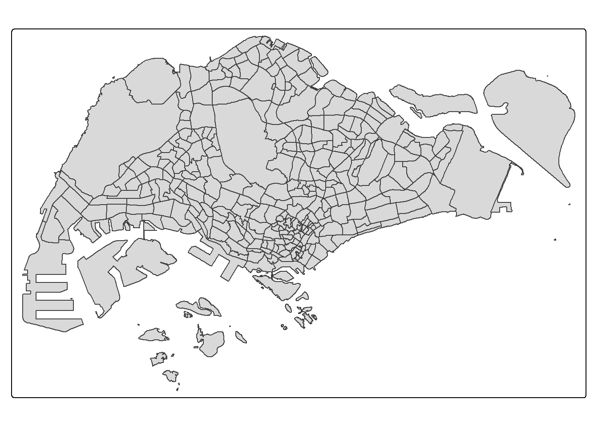
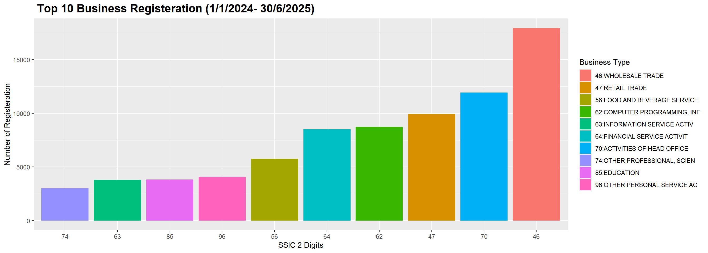
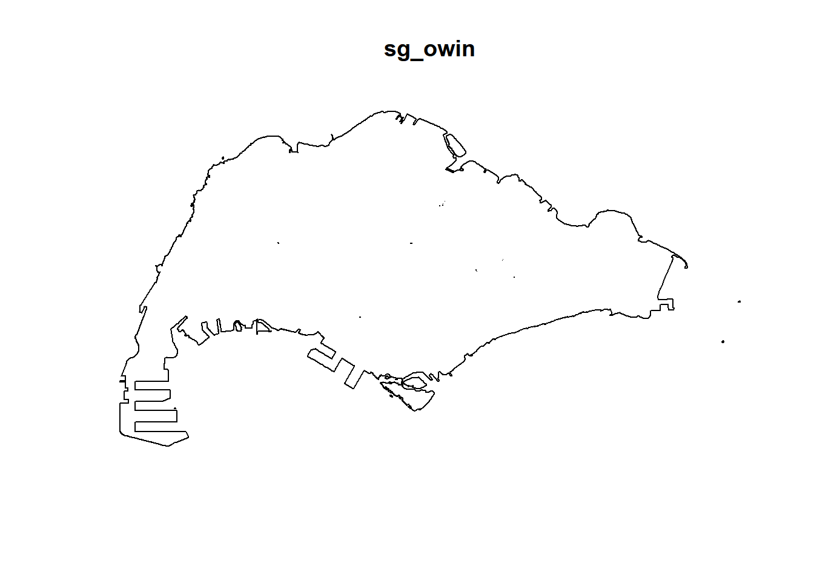

pacman:: p_load(sf, raster, spatstat, sparr, tmap, tidyverse, terra, stopp, stpp, magick, fs,vroom, readxl,rvest, onemapsgapi,tidygeocoder)01: Geospatial Analytics for Public Good
1 Overview
Motivation
Spatial Point Pattern Analysis (SPPA) refers to the study of how points are arranged or distributed across a given surface. There points may represent:
Events, such as crimes, road accidents, or disease occurrences, or
Service and facility locations, including shops (e.g., cafes, supermarkets) and community facilities like childcare or aged care centres.
First-order Spatial Point Pattern Analysis (1-st SPPA) examines the intensity or density of points across a study area. It identifies spatial trends in point distribution without considering interaction between points helping to answer questions like:
Where are points most concentrated?
Is density uniform or variable?
How dispersed is the pattern?
Unlike first-order analysis, which looks only at overall density independently, second-order methods reveal relationships and influences between centres (points) based on distance.
A spatio-temporal point process is a random set of points, each showing when and where an event happens. Examples include disease cases, animal sightings, or natural disasters such as fires and earthquakes.
As more data is collected with both time and location, analysing spatio-temporal patterns has become more important. In recent years, several R packages have been developed for this purpose.
This exercise demonstrates how to apply the process through a case study of New Business in Singapore, from 1 January to 30 June 2025.
Since the period covers all of 2024 and first half of 2025, we split the data into two groups and compare them: Baseline: 2024 (Jan–Dec) Comparison: 2025 (Jan–Jun) This let us check whether some SSIC groups are growing faster in 2025, or whether patterns are stable.
2 objective
The key questions we aim to address are:
1. Are new business locations in Singapore independent in space and time?
2. If not, in which areas and during which periods do the forest fires tend to cluster?
3 The Data
For this exercise, the two datasets used are as follows:
Master Plan 2019 Subzone Boundary (No Sea) (KML) contains xxx, downloaded from data.gov.sg.
Corporate Entities dataset contains corporate entitites regisretarion date since… Aug 2025, among with we extracted from duration and study buness based on SSIC 2020. THe orgindal data is downed from data.gov.sg
4 Installing and Loading the R Packages
A total of six R packages will be used in this exercise.
| Package | Description |
|---|---|
| sf | Simple Features, a new R package which handles importing, managing, and processing vector-based geospatial data. |
| raster | Tools for reading, writing, and analyzing raster (gridded) spatial data in R |
| spatstat | Provides useful functions for SPPA, including kcross, Lcross etc. |
| sparr | Functions for fixed/adaptive kernel density estimation and relative risk mapping via density ratios; also supports fixed-bandwidth space-time density and risk estimation with inference. |
| tmap | Creates cartographic quality static or interactive choropleth maps. |
| tidyverse | A collection of R packages for data import, cleaning, transformation, and visualization (e.g., readr, dplyr, tidyr, ggplot2). |
| terra | Modern package for raster/vector spatial data and will be used to convert spastat outputs into terra format. |
stopp for 2rd order ST SPPA |
stpp |
magick for animation |
fs for renaming |
: {tbl-colwidths=“[15,85]”}
After installation via install.packages(), we load them into R environment using the code below.
5 Importing and Preparing Study Area
The following code chunk shows the steps to first import the Master plan 2019 Subzone Boundary (No Sea) data using st_read() function from sf package, extract the required 4 columns from the Description field, filter out the nearby islands, and finally save the file as mpsz_cl for further analysis.
mpsz_sf <- st_read("data/geospatial/rawdata/MasterPlan2019SubzoneBoundaryNoSeaKML.kml") %>%
st_zm(drop = TRUE, what = "ZM") %>%
st_transform(crs = 3414)Reading layer `URA_MP19_SUBZONE_NO_SEA_PL' from data source
`C:\lsrgc\ISSS626-yiqiong-pan\Take-home_Ex\Take-home_Ex01\data\geospatial\rawdata\MasterPlan2019SubzoneBoundaryNoSeaKML.kml'
using driver `KML'
Simple feature collection with 332 features and 2 fields
Geometry type: MULTIPOLYGON
Dimension: XY
Bounding box: xmin: 103.6057 ymin: 1.158699 xmax: 104.0885 ymax: 1.470775
Geodetic CRS: WGS 84summary(mpsz_sf) Name Description geometry
Length:332 Length:332 MULTIPOLYGON :332
Class :character Class :character epsg:3414 : 0
Mode :character Mode :character +proj=tmer...: 0 tm_shape(mpsz_sf) +
tm_polygons() 
extract_kml_field <- function(html_text, field_name) {
if (is.na(html_text) || html_text == "") return(NA_character_)
page <- read_html(html_text)
rows <- page %>% html_elements("tr")
value <- rows %>%
keep(~ html_text2(html_element(.x, "th")) == field_name) %>%
html_element("td") %>%
html_text2()
if (length(value) == 0) NA_character_ else value
}# map_chr of purr (tidyverse) applies a function to each element of a list/vector and returns a character vector.
mpsz_sf <- mpsz_sf %>%
mutate(
REGION_N = map_chr(Description, extract_kml_field, "REGION_N"),
PLN_AREA_N = map_chr(Description, extract_kml_field, "PLN_AREA_N"),
SUBZONE_N = map_chr(Description, extract_kml_field, "SUBZONE_N"),
SUBZONE_C = map_chr(Description, extract_kml_field, "SUBZONE_C")
) %>%
select(-Name, -Description) %>%
relocate(geometry, .after = last_col())mpsz_cl <- mpsz_sf %>%
filter(SUBZONE_N != "SOUTHERN GROUP",
PLN_AREA_N != "WESTERN ISLANDS",
PLN_AREA_N != "NORTH-EASTERN ISLANDS")
write_rds(mpsz_cl,
"data/geospatial/mpsz_cl.rds")mpsz_cl <- read_rds("data/geospatial/mpsz_cl.rds")
summary(mpsz_cl) REGION_N PLN_AREA_N SUBZONE_N SUBZONE_C
Length:327 Length:327 Length:327 Length:327
Class :character Class :character Class :character Class :character
Mode :character Mode :character Mode :character Mode :character
geometry
MULTIPOLYGON :327
epsg:3414 : 0
+proj=tmer...: 0 tm_shape(mpsz_cl) +
tm_polygons() 
we realise that `preimiarly ssic code has missing leading 0 probably due to transmission and registartion date date type is ymd.
Inside map_dfr(), vroom(.x) → reads each CSV filter(between(…)) → keeps only rows in the date window. map_dfr() → row-binds all filtered CSVs into one tibble (files_fl).
dir <- "data/aspatial/rawdata"
files <- dir_ls(dir, glob = "*.csv") #ls: list command, glob wild card
#one_file <- vroom(files[1]) #check one file
#spec(one_file)
files_fl <- files %>%
map_dfr(~ vroom(.x, show_col_types = FALSE) %>% #return data frames
filter(between(registration_incorporation_date,
as.Date("2024-01-01"),
as.Date("2025-06-30"))))quick review on the column types
files_fl# A tibble: 108,877 × 53
uen issuance_agency_id entity_name entity_type_descript…¹
<chr> <chr> <chr> <chr>
1 202416660D ACRA ARUQUA PTE. LTD. Local Company
2 202431737K ACRA AGRO SINDO PTE. LTD. Local Company
3 202506117H ACRA A5 SG LAMBDA PTE. LTD. Local Company
4 202400003R ACRA APEXA PTE. LTD. Local Company
5 202400009C ACRA ALGORAKI PTE. LTD. Local Company
6 202400019N ACRA A LIFE BY DESIGN DIGITA… Local Company
7 202400022K ACRA AIKGUAN STRATEGIC SOLUT… Local Company
8 202400026N ACRA AUTO BRUH PTE. LTD. Local Company
9 202400034E ACRA ARTICULATED SOUNDS PTE.… Local Company
10 202400037W ACRA A&F VENTURES PTE. LTD. Local Company
# ℹ 108,867 more rows
# ℹ abbreviated name: ¹entity_type_description
# ℹ 49 more variables: business_constitution_description <chr>,
# company_type_description <chr>, paf_constitution_description <chr>,
# entity_status_description <chr>, registration_incorporation_date <date>,
# uen_issue_date <date>, address_type <chr>, block <chr>, street_name <chr>,
# level_no <chr>, unit_no <chr>, building_name <chr>, postal_code <chr>, …spec(files_fl)cols(
uen = col_character(),
issuance_agency_id = col_character(),
entity_name = col_character(),
entity_type_description = col_character(),
business_constitution_description = col_character(),
company_type_description = col_character(),
paf_constitution_description = col_character(),
entity_status_description = col_character(),
registration_incorporation_date = col_date(format = ""),
uen_issue_date = col_date(format = ""),
address_type = col_character(),
block = col_character(),
street_name = col_character(),
level_no = col_character(),
unit_no = col_character(),
building_name = col_character(),
postal_code = col_character(),
other_address_line1 = col_character(),
other_address_line2 = col_character(),
account_due_date = col_character(),
annual_return_date = col_character(),
primary_ssic_code = col_double(),
primary_ssic_description = col_character(),
primary_user_described_activity = col_character(),
secondary_ssic_code = col_character(),
secondary_ssic_description = col_character(),
secondary_user_described_activity = col_character(),
no_of_officers = col_double(),
former_entity_name1 = col_character(),
former_entity_name2 = col_character(),
former_entity_name3 = col_character(),
former_entity_name4 = col_character(),
former_entity_name5 = col_character(),
former_entity_name6 = col_character(),
former_entity_name7 = col_character(),
former_entity_name8 = col_character(),
former_entity_name9 = col_character(),
former_entity_name10 = col_character(),
former_entity_name11 = col_character(),
former_entity_name12 = col_character(),
former_entity_name13 = col_character(),
former_entity_name14 = col_character(),
former_entity_name15 = col_character(),
uen_of_audit_firm1 = col_character(),
name_of_audit_firm1 = col_character(),
uen_of_audit_firm2 = col_character(),
name_of_audit_firm2 = col_character(),
uen_of_audit_firm3 = col_character(),
name_of_audit_firm3 = col_character(),
uen_of_audit_firm4 = col_character(),
name_of_audit_firm4 = col_character(),
uen_of_audit_firm5 = col_character(),
name_of_audit_firm5 = col_character()
)sanity check
any(files_fl$registration_incorporation_date < ymd("2024-01-01") |files_fl$registration_incorporation_date > ymd("2025-06-30"))[1] FALSEany(duplicated(files_fl))[1] FALSEwe realise that `preimiarly ssic code has missing leading 0 probably due to nuemvic type. so we pad the 0 to the code and create new column where 2d is extracted per row.
files_ssic <-files_fl%>%
mutate(`ssic_5d` = str_pad(.[[22]], width = 5, side = "left", pad = "0")) %>%
mutate(`ssic_2d` = str_sub(`ssic_5d`,1, 2))it is time to rerragnet the columsn since there were 55 columsns after the ssic_2d, we select the following columns. uen, name, reg date, type, post code, and ssic 5d, ssic 2d
files_sl <- files_ssic %>%
select(c(1,3:4,6,8:9,17,54,55))load the colasifiaction file, and skip top 4 columns to locate the correct the collumn. select the 2d only and its depscrition.
ssic_lookup <- read_excel("data/aspatial/ssic2020-classification-structure.xlsx", skip = 4)%>%
select(ssic_code = `SSIC 2020`, ssic_title = `SSIC 2020 Title`) %>%
filter(!is.na(ssic_code)) %>%
filter(str_length(ssic_code) == 2)left join with main data.
files_sl_jn <- files_sl%>%
left_join(ssic_lookup, by = c("ssic_2d" = "ssic_code"))check the number of registeration per business group.
files_sl_ct<- files_sl_jn %>%
group_by(`ssic_2d`,`ssic_title`) %>%
summarise(n = n(), .groups = "drop") %>%
arrange(desc(n))
top_10 <-head(files_sl_ct, 10)
top_10# A tibble: 10 × 3
ssic_2d ssic_title n
<chr> <chr> <int>
1 46 WHOLESALE TRADE 17946
2 70 ACTIVITIES OF HEAD OFFICES; MANAGEMENT CONSULTANCY ACTIVITIES 11945
3 47 RETAIL TRADE 9943
4 62 COMPUTER PROGRAMMING, INFORMATION TECHNOLOGY CONSULTANCY AND R… 8740
5 64 FINANCIAL SERVICE ACTIVITIES, EXCEPT INSURANCE AND PENSION FUN… 8524
6 56 FOOD AND BEVERAGE SERVICE ACTIVITIES 5758
7 96 OTHER PERSONAL SERVICE ACTIVITIES 4081
8 85 EDUCATION 3825
9 63 INFORMATION SERVICE ACTIVITIES AND ONLINE MARKETPLACES 3811
10 74 OTHER PROFESSIONAL, SCIENTIFIC AND TECHNICAL ACTIVITIES 3030plot a bar chart for the top 10 busienss type
top_10 %>%
mutate(ssic_type = paste(ssic_2d,str_sub(ssic_title, 1,25), sep=":")) %>%
ggplot(aes(x = reorder(ssic_2d, n), y = n, fill = ssic_type)) +
geom_col() +
#coord_filp() +
labs(title =" Top 10 Business Registeration (1/1/2024- 30/6/2025)",
x = "SSIC 2 Digits",
y = "Number of Registeration",
fill = "Business Type")+
theme(plot.title = element_text(size = 16, face = "bold"))
write.csv(files_sl_jn,"data/aspatial/files_sl_jn.csv")files_sl_jn <-vroom("data/aspatial/files_sl_jn.csv")
glimpse(files_sl_jn)Rows: 108,877
Columns: 11
$ ...1 <dbl> 1, 2, 3, 4, 5, 6, 7, 8, 9, 10, 11, 12,…
$ uen <chr> "202416660D", "202431737K", "202506117…
$ entity_name <chr> "ARUQUA PTE. LTD.", "AGRO SINDO PTE. L…
$ entity_type_description <chr> "Local Company", "Local Company", "Loc…
$ company_type_description <chr> "Exempt Private Company Limited by Sha…
$ entity_status_description <chr> "Live Company", "Live Company", "Live …
$ registration_incorporation_date <date> 2024-04-26, 2024-08-05, 2025-02-12, 2…
$ postal_code <chr> "49422", "48823", "048948", "575744", …
$ ssic_5d <dbl> 70201, 1413, 64202, 70201, 62022, 6320…
$ ssic_2d <dbl> 70, 1, 64, 70, 62, 63, 46, 77, 59, 68,…
$ ssic_title <chr> "ACTIVITIES OF HEAD OFFICES; MANAGEMEN…Narrow down to top 3–5 SSICs for deep-dive analysis SPPA/ST-SPPA
6 Geospatial Data Wrangling
first tidy up the postal code, some are missing lead “0”
files_geo<-files_sl_jn%>%
mutate(`address` = str_pad(postal_code, width = 6, side = "left", pad = "0"))
glimpse(files_geo)Rows: 108,877
Columns: 12
$ ...1 <dbl> 1, 2, 3, 4, 5, 6, 7, 8, 9, 10, 11, 12,…
$ uen <chr> "202416660D", "202431737K", "202506117…
$ entity_name <chr> "ARUQUA PTE. LTD.", "AGRO SINDO PTE. L…
$ entity_type_description <chr> "Local Company", "Local Company", "Loc…
$ company_type_description <chr> "Exempt Private Company Limited by Sha…
$ entity_status_description <chr> "Live Company", "Live Company", "Live …
$ registration_incorporation_date <date> 2024-04-26, 2024-08-05, 2025-02-12, 2…
$ postal_code <chr> "49422", "48823", "048948", "575744", …
$ ssic_5d <dbl> 70201, 1413, 64202, 70201, 62022, 6320…
$ ssic_2d <dbl> 70, 1, 64, 70, 62, 63, 46, 77, 59, 68,…
$ ssic_title <chr> "ACTIVITIES OF HEAD OFFICES; MANAGEMEN…
$ address <chr> "049422", "048823", "048948", "575744"…get_geocode_by_ssic <- function(df, ssic_code) {
# 1) subset this SSIC
sub <- df %>% filter(ssic_2d == ssic_code)
# 2) unique, valid postcodes
pc <- tibble(address = unique(sub$address))
# 3) geocode (NOTE: column name passed as a STRING)
geo <- geocode_onemap(pc, "address", return_geom = TRUE)
# 4) join back
sub %>% left_join(geo, by = "address") %>%
st_as_sf(coords = c("LONGITUDE", "LATITUDE"), crs = 4326, remove = FALSE) %>%
st_transform(crs=3414)
}
#fs_geo <- get_geocode_by_ssic(files_geo, "64") #FINANCIAL SERVICES
#glimspe()
#wst_geo <- get_geocode_by_ssic(files_geo, "46") # WHOLESALE TRADE
#mcs_geo <- get_geocode_by_ssic(files_geo, "70") # MANAGEMENT CONSULTANCY ACTIVITIES
#rt_geo <- get_geocode_by_ssic(files_geo, "47") #RETAIL TRADE
#cp_geo <- get_geocode_by_ssic(files_geo, "62") # COMPUTER PROGRAMMING6.1 Converting sf Point Data Frames to PPP
Here we use as.ppp() of spatstat package to covert the point data bsns_sf to ppp file, confirm the change using class() and have a quick overview of the data statistics via summary().
6.2 Creating Owin Object
Similarly, the owin object can be created using the function as.owin() for polygon data. After the conversion, the class() and plot() functions can be used to verify that the object is of the correct class and that the data retains its original shape.
sg_owin <-as.owin(mpsz_cl)class(sg_owin)[1] "owin"plot(sg_owin)
6.3 Combining Point Events object and Owin Object
7 Compute spatial and spatio-temporal KDE of the selected business types.
8 second order spatial and spatio-temporal analysis on the selected business types.
9 Describe and discuss the analysis results obtained from first and second orders of SPPA & ST SPPA.
10 short report of not more than 150 words describing the spatio-temporal patterns revealed by the geovisualisation and statistical graphics.
11 discuss how these findings can be used to support urban land use planning and management. (Not more than 500 words)
Check local policy during 2024–2025:
e.g., Singapore introduced incentives for fintech or retail startups?
New sustainability/green finance schemes?
Post-COVID recovery grants?
Why: If a sudden spike in registrations in certain SSIC groups coincides with a government initiative,